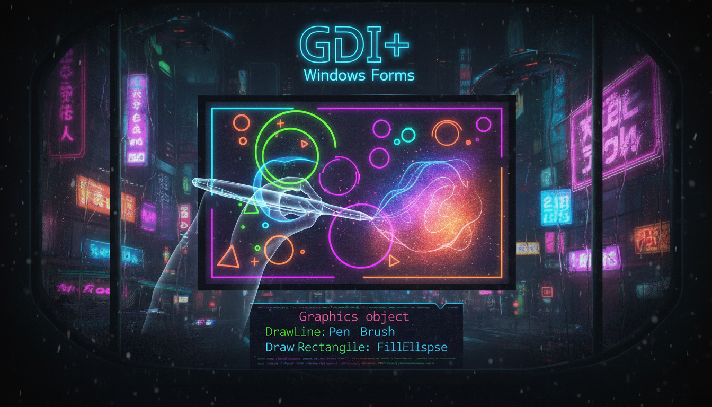

GDI+, подія Paint, контекст малювання

// Малювання у події Paint
void MyForm_Paint(Object^ sender, PaintEventArgs^ e) {
Graphics^ g = e->Graphics;
// Малювання лінії
Pen^ pen = gcnew Pen(Color::Cyan, 2);
g->DrawLine(pen, 10, 10, 200, 100);
// Малювання прямокутника
g->DrawRectangle(pen, 50, 50, 150, 100);
// Заповнення
Brush^ brush = gcnew SolidBrush(Color::FromArgb(50, 100, 255));
g->FillRectangle(brush, 250, 50, 150, 100);
// Текст
Font^ font = gcnew Font("Arial", 14);
g->DrawString("Привіт!", font, Brushes::White, 50, 200);
delete pen;
delete brush;
}
// Примусове перемалювання
this->Invalidate();